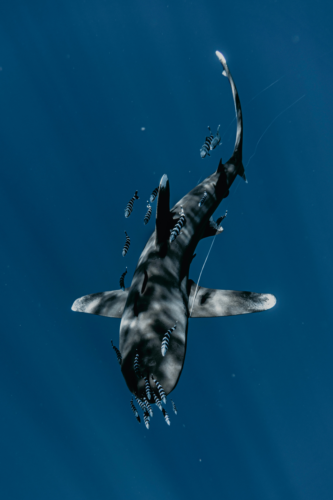

In addition to sharks contributing to keeping our oceans clean, they also take on the important role of keeping the ecosystem in check.
Without sharks keeping the population of their prey in check, it would cause a large imbalance of the ecosystem, and throw everything out of place, you might think that we would be better off without sharks because they are predators, but predators are very important to having a healthy ecosystem.

If we suddenly took sharks completely out of the equation, certain species, namely the ones they hunt and eat, would grow out of control, this would also cause those creatures to eat up all of their prey, and now the entire oceans ecosystem would be ruined. You might be asking yourself right now "well, how does that affect me?" Or, "why should I care?". It has a greater effect on us then you might think. Many people all over the world rely on food that comes from the ocean, a lot of these things are strongly regulated so that things like overfishing does not happen, if the oceans ecosystems were to get all messed up, so would our own food supplies. You might not eat sea food, and might not think this would directly affect you, but you would probably be suprised just how many things we eat and use come from the ocean, not to mention there are lots of places in the world that do heavily rely on the food they get from the ocean.